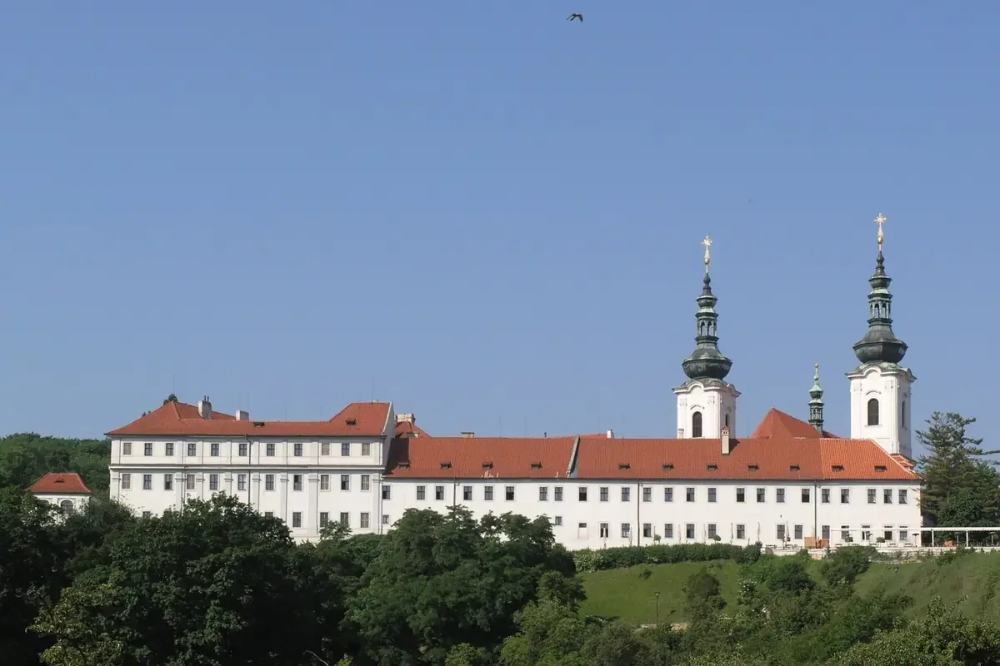
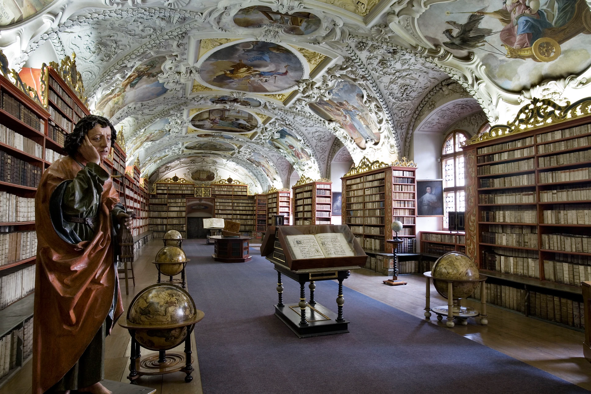
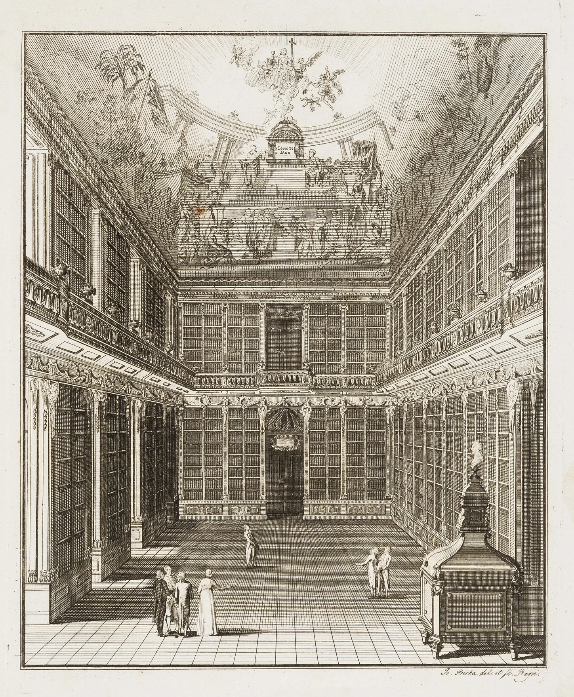
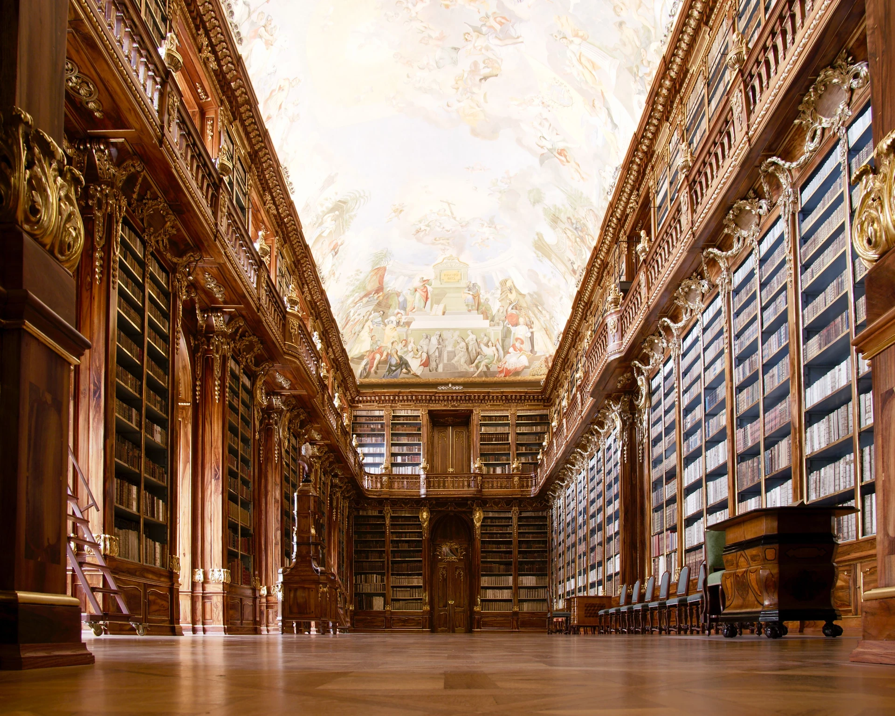
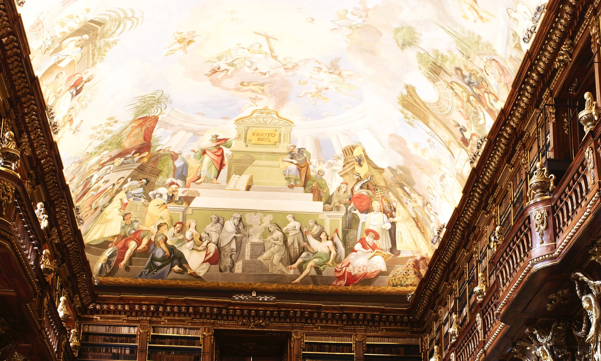
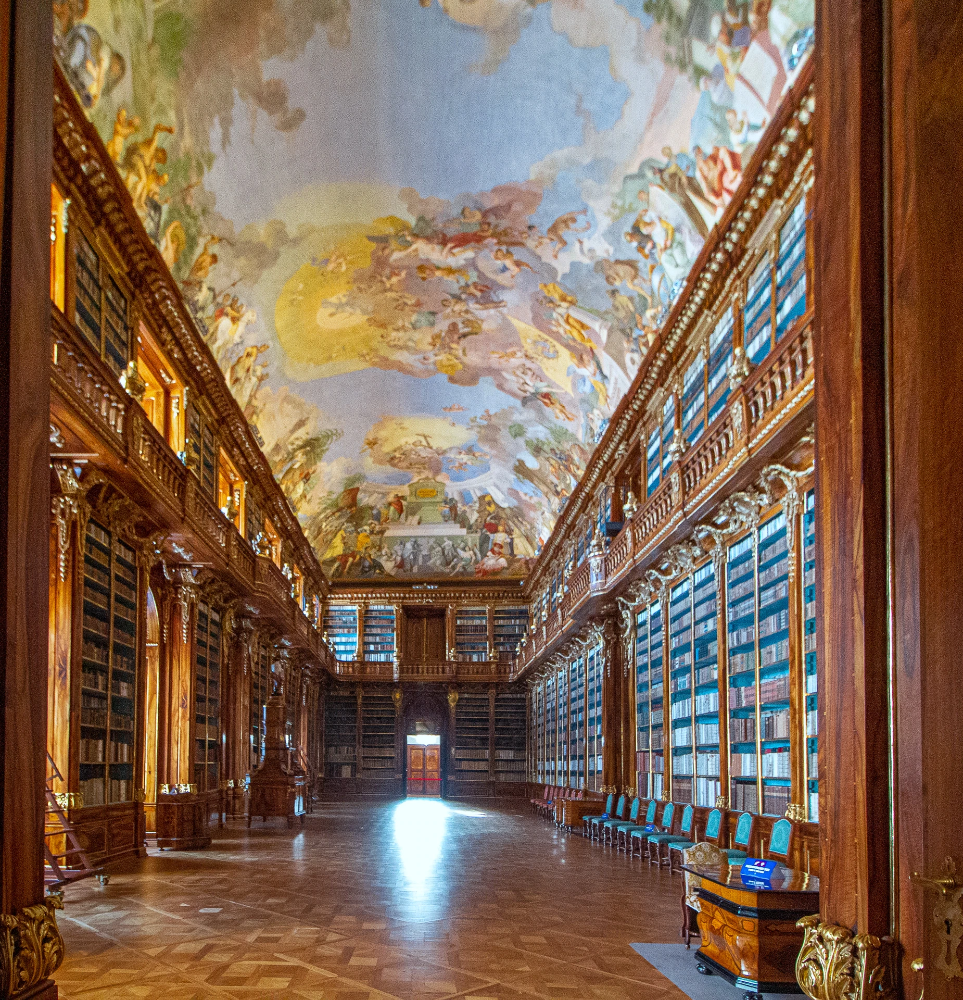

아직 펼치지 않은 카드책으로 지은 궁전 · 2스트라호프 수도원 도서관한 수도원에 ‘신학의 방’과 ‘철학의 방’이 나란히 있어요. 왜 두 방을 따로, 그러나 나란히 두었을까요?프라하 언덕 위 수도원에 책으로 가득한 방이 두 개 있대!
1794년체코 프라하 · 스트라호프 수도원 철학의 방
스트라호프 수도원 도서관
1794년, 일흔 살의 화가 마울베르치가 프라하 스트라호프 수도원의 새 도서관 천장에 그림을 그렸어요. 문간에 서서 고개를 들면, 그 천장 끝에 아테네의 한 제단이 보여요. 천장 속 사람들을 하나씩 찾아보세요.
프라하 언덕 위 수도원 도서관 천장에 아주 큰 그림이 있대. 그림 속 사람들을 하나씩 찾아볼까?
검수 전 시안이에요(기준서 1판). 장면에는 스트라호프 수도원의 설명, 독일 인물 사전, 미술사학자 호슈의 연구(2013), 사도행전 17장에 있는 것만 옮겼어요. 상상은 ‘눈 감고 상상해 보기’에만 썼어요.
시안 확인용카드 단계 미리 보기
1
신학의 방, 붉은 옷의 지혜
스트라호프 수도원의 첫 도서관 방은 1671년, 히른하임(Hieronymus Hirnheim) 수도원장 때 지었어요. 그때는 지금보다 짧았고, 1720년대에 방을 늘리면서 천장 그림을 그렸어요.
그림은 이 수도원의 수도자 시아르드 노세츠키(Siard Nosecký)가 그렸어요. 그림마다 성경 구절, 주로 구약의 말씀을 바탕으로 했어요. 수도원은 이 그림들을 하나로 묶는 사람이 붉은 옷에 파란 망토를 두른 여인, ‘하느님의 지혜’라고 설명해요.

방을 지은 히른하임 수도원장은 1676년에 책 한 권을 냈어요. 제목은 ‘사람의 자만에 대하여’로 시작해, 사람의 학문이 ‘텅 빈 채 바람처럼 부풀어 오르는 것’을 경계해요(라틴어 제목을 이 안내서가 옮김).
수도원은 천장 그림의 생각이 이 책과 맞닿아 있다고 설명해요. 히른하임에게 참된 지혜는 착하게 사는 삶과 거룩한 행동에 있었어요.
첫 번째 방 천장에 빨간 옷에 파란 망토를 두른 여인이 있어. 그 여인이 ‘하느님의 지혜’래.
물어보기많이 아는 것과 지혜로운 것은 어떻게 다를까?
2
책장에 맞춰 지은 방
1784년, 황제 요제프 2세가 즈노이모 가까운 루카(Louka) 수도원을 닫았어요. 스트라호프와 같은 프레몽트레회 수도원이었어요. 그곳에는 막 지은 도서관 방이 있었고, 천장에는 마울베르치가 1778년에 그린 그림이 있었어요.
스트라호프의 마이어(Václav Mayer) 수도원장은 황실과 이야기해 루카 도서관의 호두나무 책장을 사들였어요. 1792년, 책장은 그 안의 책과 함께 프라하로 왔어요.


새 방은 그 책장에 맞춰 크기를 정했어요. 길이 32m, 너비 10m, 높이 14m예요. 맨 위 칸은 2층 회랑에서만 닿는데, 회랑으로 오르는 나선 계단을 양쪽 구석에 숨기고 가짜 책등으로 가렸어요.
왼쪽은 요한 베르카(Johann Berka)가 새긴 막 지은 철학의 방이에요. 1797년 마이어 수도원장이 이 천장을 풀이해 펴낸 책의 첫 그림이에요. 판화를 눌러 크게 보면, 한가운데에서 한 사람이 고개를 젖혀 천장을 올려다보고 있어요.
문 닫은 수도원의 책장을 통째로 사 왔대. 새 방은 그 책장 크기에 맞춰 지었어!
물어보기판화 속에서 천장을 올려다보는 사람을 찾을 수 있어?
3
천장 끝, 아테네의 제단
1794년 3월, 일흔 살의 화가 프란츠 안톤 마울베르치(Franz Anton Maulbertsch)가 제자 마르틴 미흘(Martin Michl)과 함께 이 방에 왔어요. 두 사람은 반년 남짓 만에 천장을 다 그렸어요.
수도원은 이 그림을 ‘인류의 정신적 발전’이라고 불러요. 아담과 하와에서 시작해 구약과 그리스의 생각, 신약을 지나 화가가 살던 때까지 이어져요. 한가운데에는 빛나는 ‘하느님의 지혜’가 있어요.
천장 끝 아테네 장면 속 사람들을 하나씩 눌러 보세요.

철학의 방 천장의 끝, 아테네 장면 · 마울베르치와 미흘, 1794년(2014년 사진의 부분) · 사진: Bjørn Erik Pedersen · CC BY 3.0 · 위키미디어 공용
그림 위의 숫자나 아래 번호를 눌러 보세요.
여섯 곳을 다 찾았어요. 문간에 선 관람객의 눈에 가장 크게 들어오는 장면이에요.
천장에는 십계명 돌판과 모세, 스승 아리스토텔레스와 함께 있는 알렉산드로스 대왕, 소크라테스와 디오게네스 같은 그리스 철학자들도 그려져 있어요.
그리고 문간에 선 사람의 눈에 가장 크게 들어오는 곳에 아테네가 있어요. 사도행전 17장에서 바울은 아테네의 아레오바고(언덕 이름이자, 그 언덕에서 열리던 높은 회의)에 서서 이야기를 시작해요. 아테네 사람들이 ‘알지 못하는 신에게’라고 새긴 제단을 보았다고요. 그리고 그들이 알지 못한 채 섬기는 그분을 알려 주겠다고 말해요.
아레오바고에서 바울의 말을 끝까지 들은 아테네 사람이라면, 어떻게 했을까요?
천장 끝에 큰 제단이 있어. 바울 아저씨가 팔을 뻗어 제단 글씨 쪽을 가리키고 있어.
물어보기처음 만난 사람들에게 이야기를 들려준다면, 무엇부터 꺼낼까?
4
문간에서 올려다보면
오늘 관람객은 책을 지키려고 두 방 안까지 들어가지 않아요. 문간에 서서 들여다보고, 고개를 들어 천장을 올려다봐요.
이 방 창가의 옴폭한 자리에는 키릴 스트라카(Cyril Straka) 부원장의 흉상이 있어요. 20세기 초에 이 도서관의 책과 기록을 사람들에게 열어 준 사서예요. ‘신학의 방’, ‘철학의 방’이라는 이름은 그가 붙였어요. 공부를 철학과 신학으로 나누던 오랜 전통을 따라서요.

두 방은 100년 넘게 떨어져 따로 지었고, 이름은 그보다 한참 뒤에 붙었어요. 그런데 신학의 방 천장 그림들은 ‘하느님의 지혜’로 묶여 있고, 철학의 방 천장 한가운데에서도 ‘하느님의 지혜’가 빛나요.
두 방 이름은 나중에 사서 할아버지가 붙였대. 그래도 두 방 천장에는 모두 ‘지혜’가 그려져 있어.
물어보기문간에서 고개를 들면, 맨 먼저 무엇이 보일 것 같아?
눈 감고 상상해 보기
철학의 방 문간에 서요. 호두나무 책장이 양쪽으로 높이 솟아 있고, 위층 회랑의 금빛 장식이 창빛에 반짝여요. 종이와 나무 냄새가 섞인 서늘한 공기. 고개를 천천히 들면 하늘빛 천장이 멀리 끝까지 이어지고, 저 끝 흰 제단 앞에서 한 사람이 팔을 뻗어 글씨를 가리키고 있어요.
눈을 감아 봐. 커다란 책의 방 문 앞에 섰어. 나무 냄새가 나. 고개를 들면 하늘 그림이 끝없이 이어져. 저 끝에서 누가 팔을 쭉 뻗고 있어!
나의 자리
카드를 열 때 ‘왜 신학의 방과 철학의 방을 나란히 두었을까?’ 하고 물었어요. 천장 끝 아테네의 제단까지 올려다본 지금, 나는 그 물음에 어떻게 답하고 싶나요?
두 방 천장에 모두 ‘지혜’가 있었어. 너라면 두 방에 어떤 이름을 붙여 주고 싶어?
마음에 닿는 한 줄을 고르거나 직접 써 보세요. 한 줄을 남기면 이 자리의 도장이 찍혀요. 이 기기에만 저장돼요.
더 깊이
궁금한 칸만 펼쳐 읽어도 괜찮아요.
알고 보면
천장의 밑그림 마울베르치가 1793년에 그린 천장의 밑그림(유화, 167×93cm)이 스트라호프에 남아 있어요. 화가가 1794년에 수도원에 선물한 것이에요.
‘바츨라프 2세, 여기서는 1세’ 천장에는 라틴어로 ‘Wenceslaus secundus, hic primus’라고 쓴 글이 있어요. 마이어 수도원장이 바츨라프라는 이름의 두 번째 수도원장이지만, 이 도서관에서는 첫 번째라는 뜻이에요.
천장 속 수도원장 수도원은 무릎 꿇은 성 노르베르트 뒤의 사람이 마이어 수도원장의 얼굴을 하고 있다고 설명해요.
천장을 풀이한 책 마이어 수도원장은 1797년, 이 천장을 풀이한 책을 독일어와 라틴어로 펴냈어요. 둘째 장면의 판화가 독일어 책의 첫 그림이에요.
진기한 물건 방 복도의 진기한 물건 방은 1798년 마이어 수도원장 때 사들였어요. 그때 사람들은 값이 비싸다고 여겼대요.
기록마다 다른 점
철학의 방은 언제 지었나 수도원 누리집 안에서도 1782~1797년, 1792~1794년, 1791~1797년으로 다르게 적혀 있어요. 겉벽은 1783년에 섰고, 책장은 1794~1797년에 들였다고 해요.
여섯 달일까, 일곱 달일까 수도원은 마울베르치가 1794년에 여섯 달 만에 다 그렸다고 해요. 호슈는 그가 1794년 3월 17일에 와서 10월 14일에 떠났다고 적어요. 수도원 누리집의 다른 쪽에는 1796년에 끝냈다고도 적혀 있어요.
천장 속 수도원장의 얼굴 수도원은 노르베르트 뒤의 얼굴이 틀림없이 마이어 수도원장이라고 해요. 호슈는 그 사람이 메토디우스로 그려졌을 것으로 보고, 얼굴은 1800년 뒤에 더해졌을 수도 있다고 적어요.
직접 가 보기
확인한 날 · 2026년 11월 18일 · 바뀌기 쉬운 정보라 정기적으로 다시 확인해요
일반 관람은 두 방 문간에서 들여다봐요. 방 안까지 들어가는 투어는 수도원에 미리 예약해야 하고, 그 수가 많지 않아요. 여는 때와 값은 수도원 누리집에서 확인하세요.
천장 끝의 여섯 곳 금박
천장 끝 아테네 장면의 여섯 곳을 모두 찾아 읽으면 카드에 금박이 입혀져요.
아테네 장면의 여섯 곳을 모두 찾아 읽기
아레오바고에서 채색
둘 가운데 하나만 해도 카드가 채색돼요.
바울의 말을 들은 아테네 사람이 되어 고르기
아이와 함께 ‘영화처럼 보기’를 끝까지 보기
근거 보기 (9)
- 스트라호프 수도원: 도서관 — 신학의 방(히른하임, 1670년대 초·1671년, 1720년대에 늘리며 그림), 노세츠키(1693~1753), 구약 구절·붉은 옷에 파란 망토의 하느님의 지혜, 『De typho generis humani』(1676)와 참된 지혜, 지구본, 철학의 방(마이어, 1782~1797), 1794년 마울베르치와 미흘·일흔 살·여섯 달, 인류의 정신적 상승·빛나는 하느님의 지혜, 관람객 눈에 가장 크게 보이는 아테네 장면, 1778년 루카 천장의 화가 본인 재현, 진기한 물건 방(1798년, 비싸다고 여김), 특별 투어
- 스트라호프 수도원: 철학의 방과 천장 그림 — 루카의 호두나무 책장에 맞춘 방 크기, 32×10×14m, 숨긴 나선 계단과 가짜 책등, 6만 권 넘음, 스트라카 부원장의 흉상과 두 방의 이름, 하느님의 섭리, 모세와 십계명·언약궤, 알렉산드로스와 아리스토텔레스, 소크라테스·디오게네스, 아레오바고의 바울과 여러 나라 사람, 바츨라프와 루드밀라, 교회의 아버지들, 노르베르트 뒤의 마이어 수도원장, ‘Wenceslaus secundus, hic primus’, 여러 지은 해
- 스트라호프 수도원: 「하느님의 지혜의 승리」 — 1784년 요제프 2세가 루카 수도원을 닫음, 막 지은 도서관 방과 마울베르치의 천장, 황실과 이야기해 책장을 사들임, 1793년 약속, 밑그림(유화 167×93cm, 1794년 선물), 아담과 하와에서 오늘까지
- Hosch, 「Franz Anton Maulbertsch als Maler in Bibliotheksräumen, Teil II: Strahov」(2013) — 1794년 3월 17일~10월 14일, IGNOTO DEO 제단 왼쪽의 바울·오른쪽의 디오누시오(미심쩍게 들음), 동방 사람들·깃털 모자의 군인, 교회의 아버지들, 체코의 성인들, 메토디우스로 그린 마이어 수도원장(1800년 뒤일 수도)
- Robin Halwas: 마이어 『Historische Beschreibung…』(프라하, 1797) — 수도원장이 쓴 천장 풀이 책, 베르카의 첫 그림, 라틴어판, 얀 라호퍼가 만든 책장이 1792년 책과 함께 프라하로 옴, 마울베르치 1796년 8월 8일 빈에서 세상을 떠남
- 독일 인물 사전(Deutsche Biographie): 히에로니무스 히른하임 — 1670년 수도원장, 스트라호프 새 도서관을 세움, 『De Typho generis humani, seu scientiarum humanarum inani ac ventoso tumore…』(1676)
- 프라하 관광청: 스트라호프 도서관 — 일반 관람은 책을 지키려고 두 홀 안에 들어가지 않음, 루카의 도서관 가구에 맞춘 철학의 방
- Encyclopedia.com: 아레오바고 — 가장 높은 회의가 있던 언덕(‘아레스의 언덕’), 뒤에 재판소; 바울 때 그 회의는 아마 아고라에서 모였음
- 사도행전 17장 22~34절(개역개정) — 알지 못하는 신에게, 비웃은 사람·다시 듣겠다는 사람·디오누시오와 다마리
그림·사진·소리 출처
‘처음 만나는 기독교 문화’의 깊은 카드예요. 실제 인물의 사진은 쓰지 않았어요. 카드 단계와 남긴 글은 이 기기에만 저장돼요.